La vraie route du jeu, même image figée, peinte de chaque piste. Les vignettes défilent de côté. Les quatre pistes du départ (13/11) ; la route du jeu est désormais la route vivante (voir).
La route actuelle : une ligne centrale, les rails roses.
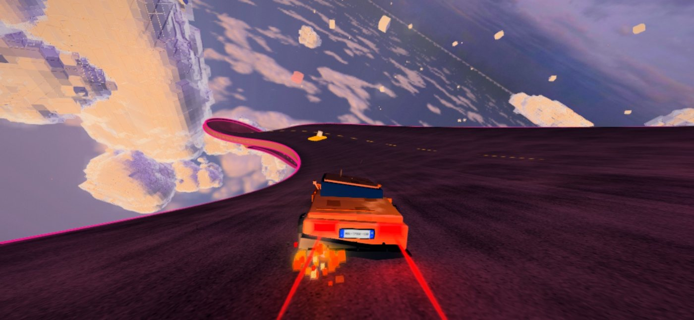
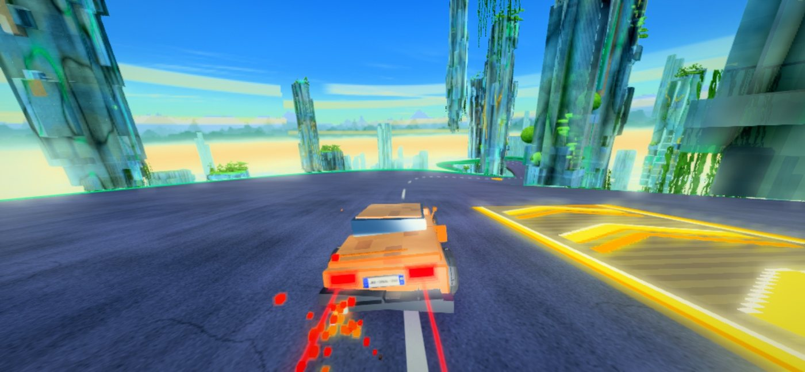
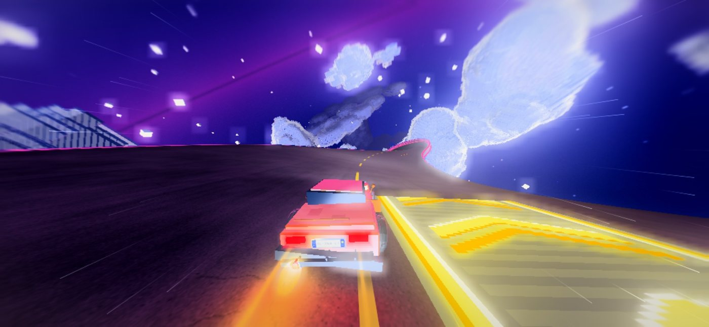
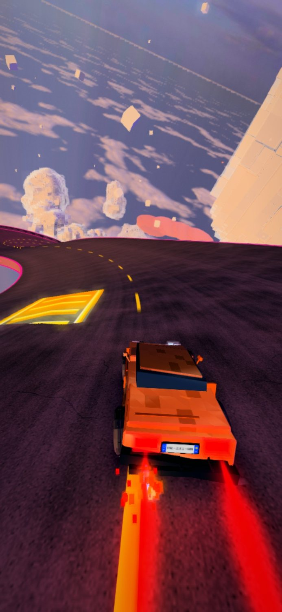
Un seul sens, 11 voies de 4,5 m. Bord gauche jaune, bord droit blanc, tirets blancs 3 m / 9 m suivis d’une ombre noire (béton de Floride), plots réfléchissants tous les 12 m, bandes rugueuses sur les accotements.
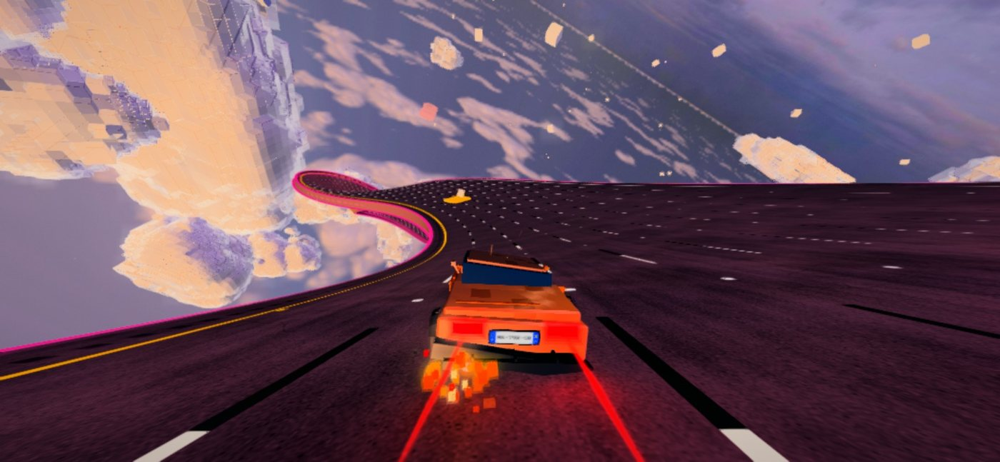
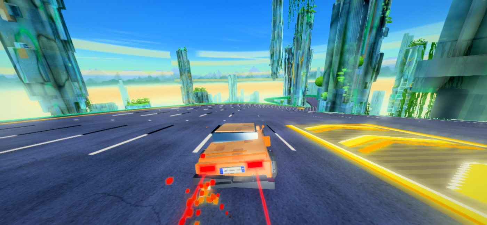
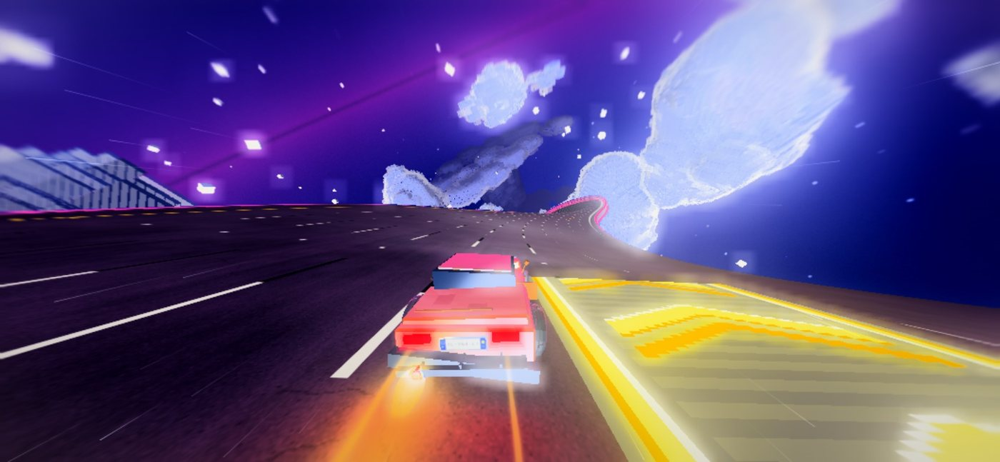
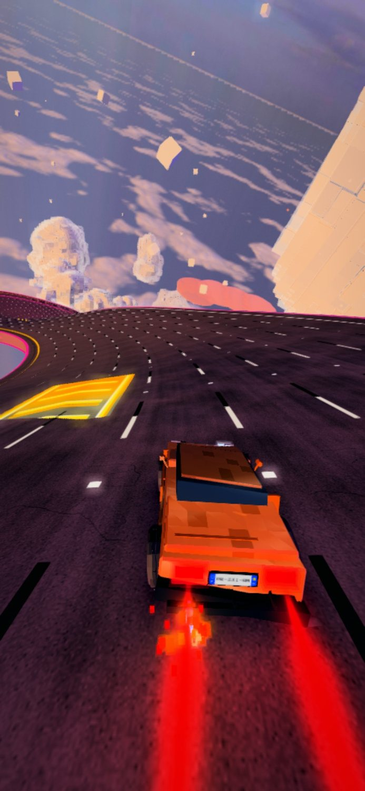
2 × 5 voies et, au milieu, un terre-plein peint : double ligne jaune hachurée. La voiture part pile dessus.
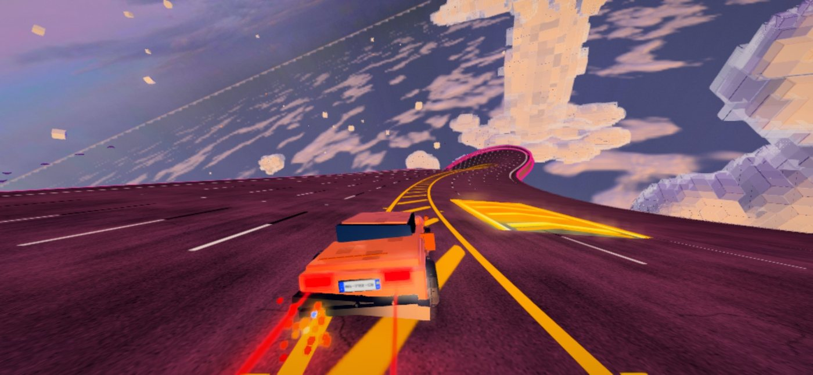
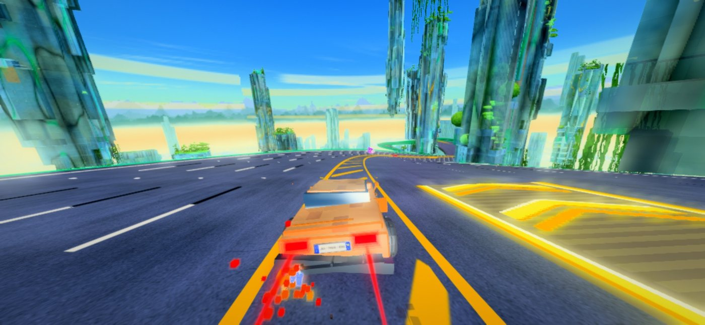
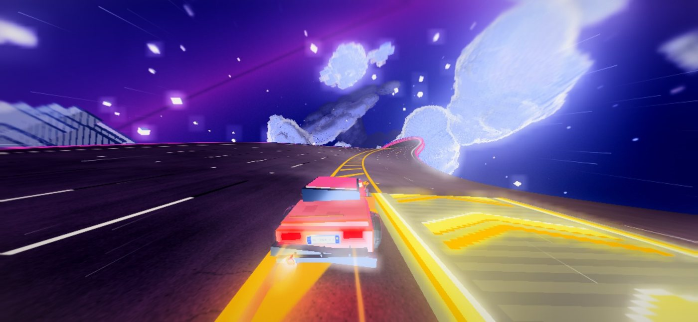
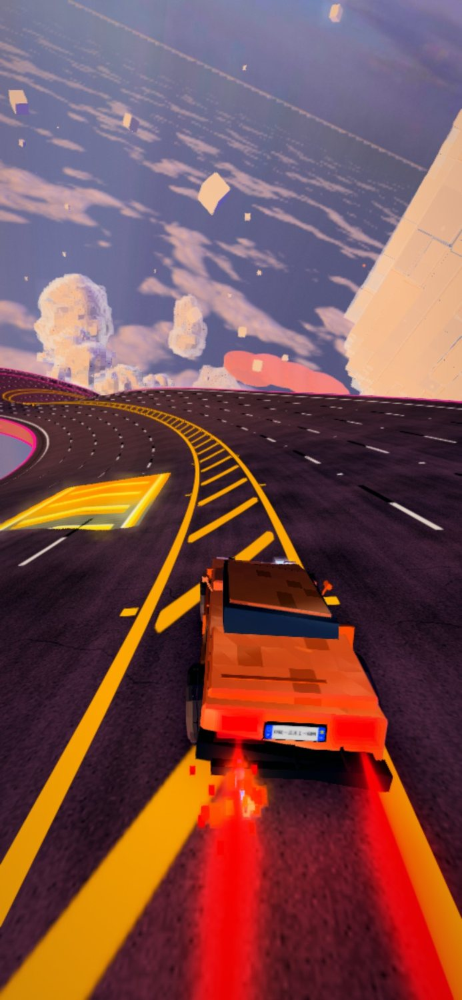
Comme à Miami : à gauche 2 voies express derrière une double ligne blanche et des poteaux orange (peints à plat ici), « EXPRESS » écrit au sol ; à droite 8 voies.
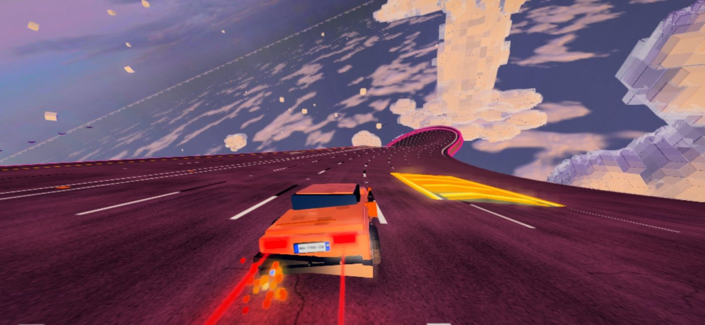
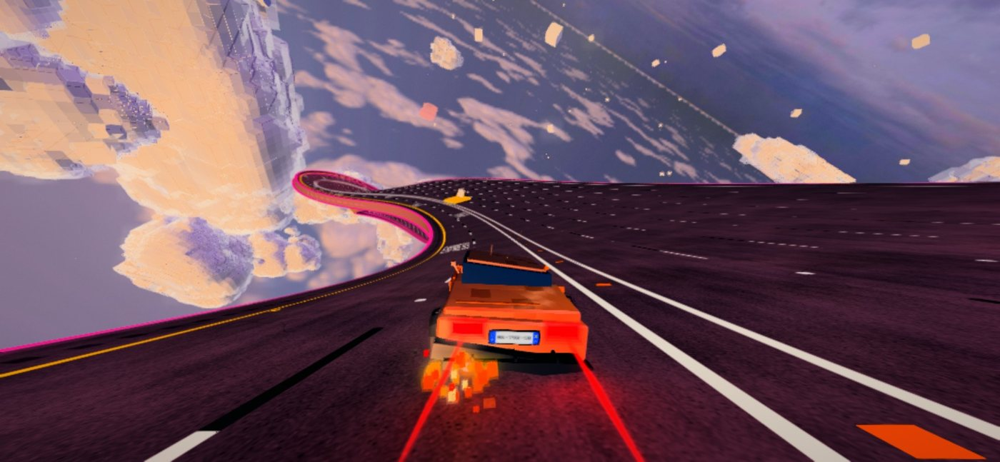
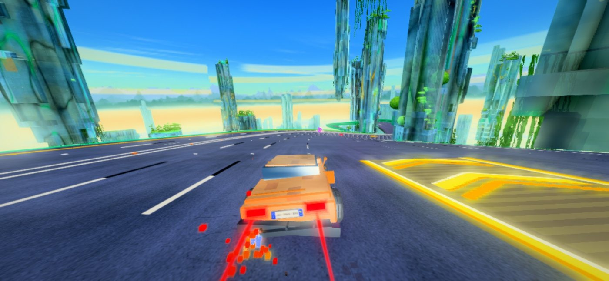
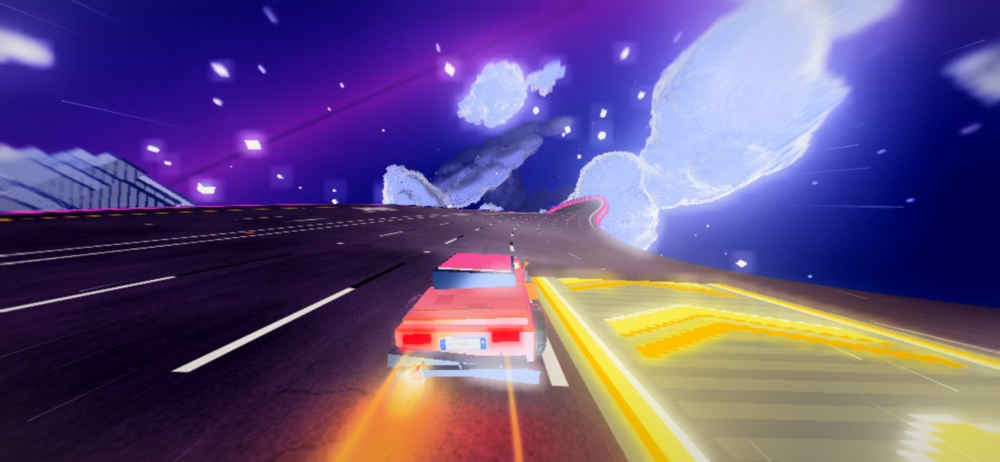
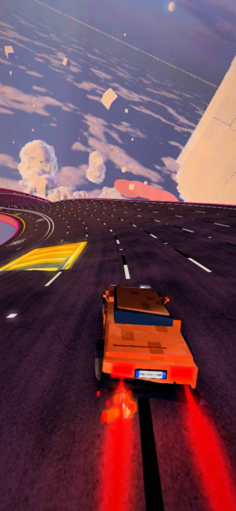
5 voies de 10 m, traits gras, longs tirets OR (la signature CASH CAR), plots dorés. Le moins réaliste, le plus lisible à grande vitesse.
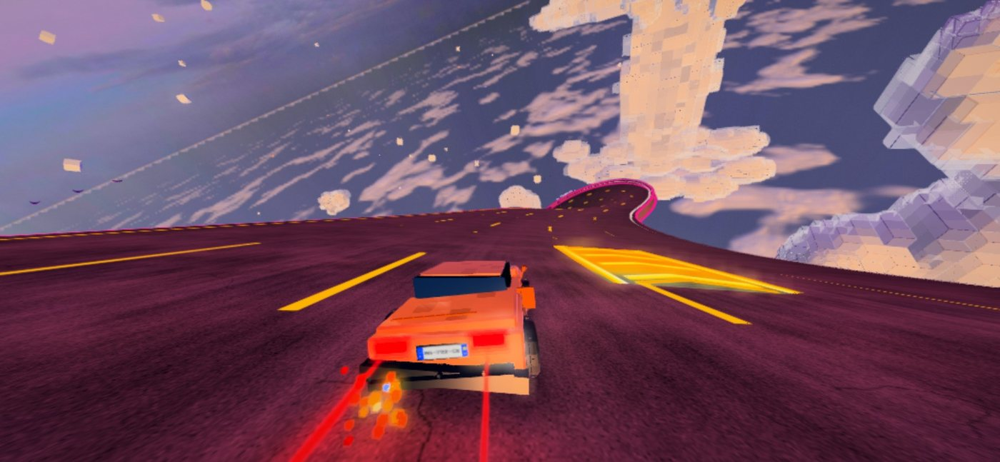
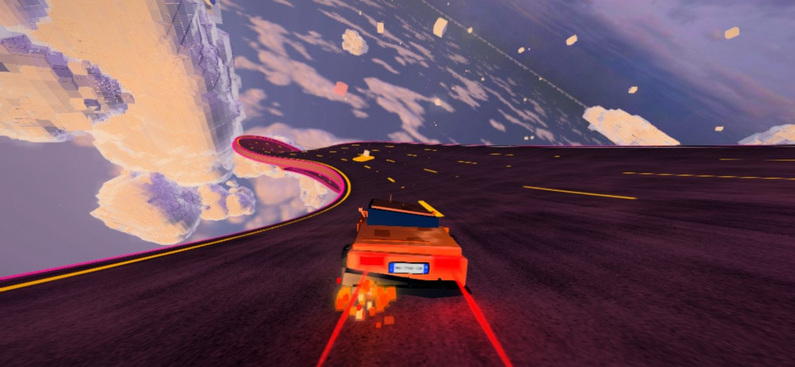
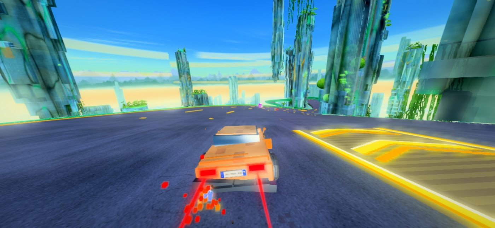
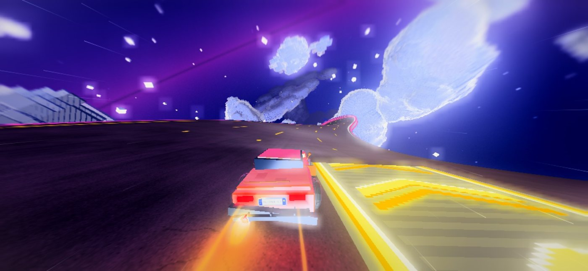
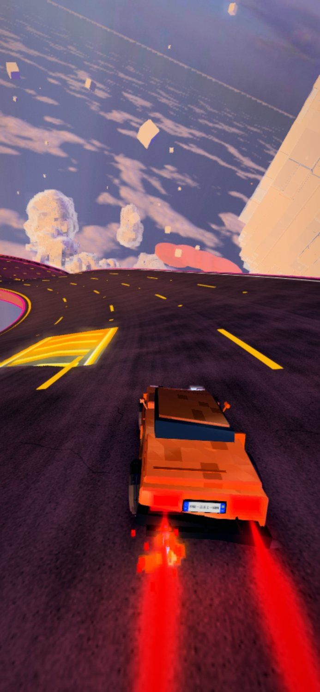